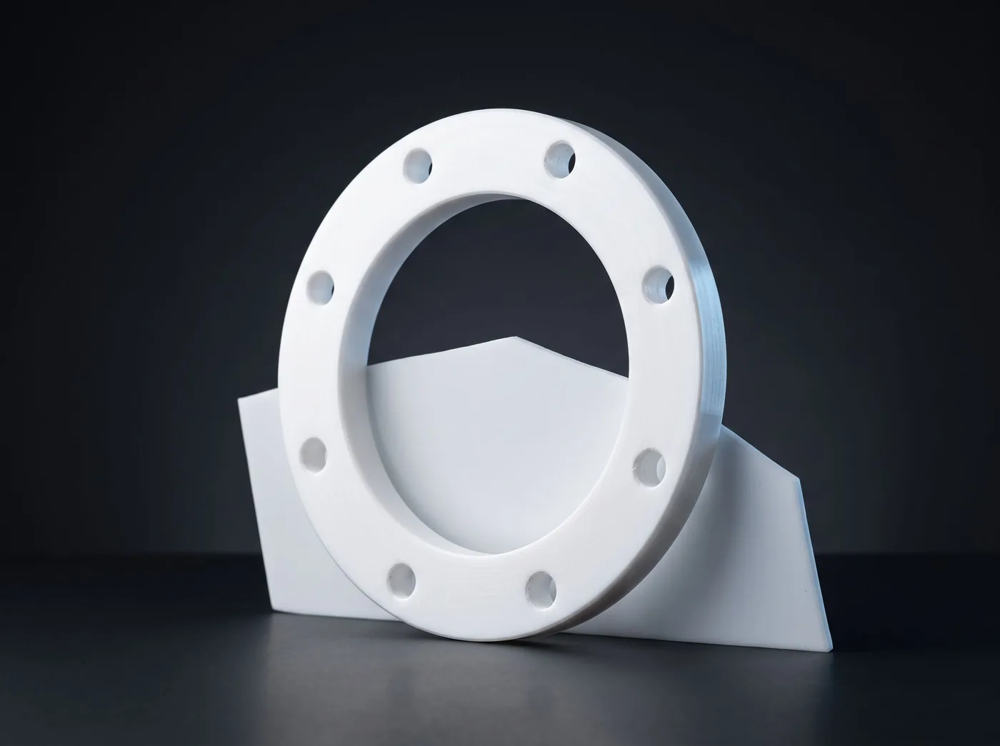

Teflon (PTFE) Conta
Kimyasal dayanımı en yüksek, gıda ve ilaç hatlarına uygun beyaz conta.
Teflon (PTFE) Conta nedir?
PTFE conta, politetrafloretilen levhadan kesilir. Bilinen en geniş kimyasal dayanıma sahip conta malzemesidir; erimiş alkali metaller dışında hemen her akışkana dayanır. Yüzeyi yapışmaz ve gözeneksizdir, bu yüzden gıda, içecek ve ilaç hatlarında tercih edilir. Sürünme eğilimini azaltmak için cam elyaf veya baryum sülfat katkılı (expanded/dolgulu) tipleri kullanılır.
Ne işe yarar?
- Asit, baz ve çözücülerin neredeyse tamamına dayanır
- Ürün tadına ve rengine karışmaz, koku bırakmaz
- Yapışmaz yüzeyi sayesinde sökümde flanşı temiz bırakır
- Elektriksel olarak yalıtkandır, galvanik korozyonu keser
Nerede kullanılır?
- Gıda, içecek ve ilaç üretim hatları
- Kimyasal tanker yükleme hatları
- Asit ve kostik devreleri
- Saf su ve CIP sistemleri
| Malzeme | Virgin PTFE / dolgulu PTFE |
|---|---|
| Kalınlık | 1,0 – 5,0 mm |
| Sıcaklık | -200 °C … +260 °C |
| Basınç | 40 bar'a kadar |
| Kimyasal | pH 0 – 14 |
| Uygunluk | FDA gıda teması uygun tipler |
Ölçü katalogda yok mu?
Elinizdeki numuneden veya flanş ölçüsünden kesiyoruz. Tek adet de üretiyoruz.
Ölçü gönderStandart ölçüler
PN 16 düz flanş ölçüleri
DIN 2576
Teflon (PTFE) Conta bu tablodaki flanş ölçülerinde standart olarak kesilir. Ölçüler milimetredir. Tabloda olmayan ölçüler ve farklı basınç sınıfları için numune veya çizim gönderin.
Ölçü ile teklif iste| Anma çapı | İç çap | Dış çap | Delik merkezi | Delik çapı | Delik adedi |
|---|---|---|---|---|---|
| DN 15 | 22 | 95 | 65 | 14 | 4 |
| DN 20 | 27,5 | 105 | 75 | 14 | 4 |
| DN 25 | 34,5 | 115 | 85 | 14 | 4 |
| DN 32 | 43,5 | 140 | 100 | 18 | 4 |
| DN 40 | 49,5 | 150 | 110 | 18 | 4 |
| DN 50 | 61,5 | 165 | 125 | 18 | 4 |
| DN 65 | 77,5 | 185 | 145 | 18 | 4 |
| DN 80 | 90,5 | 200 | 160 | 18 | 8 |
| DN 100 | 116 | 220 | 180 | 18 | 8 |
| DN 125 | 141,5 | 250 | 210 | 18 | 8 |
| DN 150 | 170,5 | 285 | 240 | 22 | 8 |
| DN 200 | 221,5 | 340 | 295 | 22 | 12 |
| DN 250 | 276,5 | 405 | 355 | 26 | 12 |
| DN 300 | 327,5 | 460 | 410 | 26 | 12 |
| DN 350 | 359 | 520 | 470 | 26 | 16 |
| DN 400 | 411 | 580 | 525 | 30 | 16 |
| DN 450 | 462 | 640 | 585 | 30 | 20 |
| DN 500 | 513,5 | 715 | 650 | 33 | 20 |
| DN 550 | 564 | 745 | 680 | 33 | 20 |
| DN 600 | 616,5 | 840 | 770 | 36 | 20 |
| DN 650 | 665 | 875 | 805 | 36 | 24 |
| DN 700 | 718 | 910 | 840 | 36 | 24 |
| DN 750 | 766 | 967 | 895 | 39 | 24 |
| DN 800 | 819 | 1025 | 950 | 39 | 24 |
| DN 900 | 920 | 1125 | 1050 | 39 | 28 |
| DN 1000 | 1022 | 1255 | 1170 | 42 | 28 |
| DN 1100 | 1123 | 1355 | 1270 | 42 | 32 |
| DN 1200 | 1225 | 1485 | 1390 | 48 | 32 |
| DN 1300 | 1326 | 1585 | 1490 | 48 | 32 |
| DN 1400 | 1426 | 1685 | 1590 | 48 | 36 |
| DN 1500 | 1530 | 1820 | 1710 | 56 | 36 |
| DN 1600 | 1626 | 1930 | 1820 | 56 | 40 |
| DN 1800 | 1826 | 2130 | 2020 | 56 | 44 |
| DN 2000 | 2026 | 2345 | 2230 | 62 | 48 |
Aynı gruptan
 Klingrit ContaAsbestsiz fiber conta levhasından kesilmiş, en çok kullanılan yassı flanş contası.
Klingrit ContaAsbestsiz fiber conta levhasından kesilmiş, en çok kullanılan yassı flanş contası.
 Telli Klingrit Contaİçine paslanmaz tel örgü gömülmüş, yüksek basınç ve buhar için takviyeli klingrit.
Telli Klingrit Contaİçine paslanmaz tel örgü gömülmüş, yüksek basınç ve buhar için takviyeli klingrit.
 Spiral Sarımlı ContaMetal şerit ile grafit dolgunun sarmal sarılmasıyla yapılan, yaylanan yüksek performans contası.
Spiral Sarımlı ContaMetal şerit ile grafit dolgunun sarmal sarılmasıyla yapılan, yaylanan yüksek performans contası.
 Saf Grafit ContaGenişletilmiş grafitten kesilen, çok yüksek sıcaklığa dayanan yumuşak conta.
Saf Grafit ContaGenişletilmiş grafitten kesilen, çok yüksek sıcaklığa dayanan yumuşak conta.